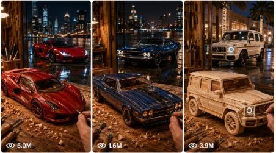

Back to all prompts
Mini Wooden Car Transformation
Storyboard & Reference

Download Reference{kind=link}
Create a 15-second vertical 9:16 cinematic ASMR transformation video for Seedance 2.0. The video starts inside a warm professional wooden craft studio where real human hands are building a highly detailed handmade wooden scale model of [VEHICLE], then transitions smoothly into the real full-sized [VEHICLE] parked on a wet reflective city street at night. Keep the entire video feeling like a real-life filmed video with natural camera movement, shallow depth of field, satisfying ASMR sounds, premium automotive reveal energy, and no artificial-looking CGI effect.
0:00–0:03 — Extreme macro close-up of skilled hands carving the front grille area of a small wooden [VEHICLE] model using a sharp hand chisel. The camera is very close to the wood surface, showing tiny curls of wood shavings falling slowly onto the workbench. The grille shape must match the real [VEHICLE] silhouette, with accurate front proportions, hood line, bumper curve, headlight placement, and recognizable luxury/sports car body language. Warm studio lighting, visible wood grain, fine dust particles in the air, soft background blur, natural hand movement, crisp chisel scraping sound.
0:03–0:06 — Fast satisfying crafting montage. Hands sand the side panels with fine sandpaper, smoothing the doors, roofline, wheel arches, and rear body shape. Then a small rotary Dremel tool carefully details the air vents, window outlines, door gaps, front splitter, rear diffuser, and body curves. Use quick close macro cuts but keep continuity of the same wooden model. The camera gently pushes in and tilts with handheld micro-movement. ASMR sounds include sanding, soft tapping, tool vibration, and falling wood dust. The model must remain realistic wood, not plastic, not cartoon, not toy-like.
0:06–0:09 — Hands attach tiny chrome-style rims, black rubber-like miniature tires, side mirrors, and optional spoiler if the selected [VEHICLE] has one. The hands carefully press each piece into place with precise satisfying clicks. Immediately after, an airbrush sprays a glossy paint finish over the wooden body, transforming raw carved wood into a premium finished miniature. The paint should match a luxury automotive finish: deep glossy reflections, smooth highlights, clean clear-coat shine, but the handcrafted wood origin should still feel believable. Close shots of wet paint reflecting studio lights, tiny droplets settling, rims shining, headlights hinted with small reflective details.
0:09–0:11 — Hero macro beauty shot of the completed miniature [VEHICLE] on the wooden table. The camera slowly slides from front grille to side profile, showing the finished model perfectly matching the real vehicle shape. The background becomes darker and moodier, studio light reflections stretch across the glossy body, and the wet shine begins to resemble a real car surface. Build anticipation with a low soft engine-like rumble blending with workshop ASMR.
0:11–0:13 — Seamless match-cut transformation. The camera pushes directly into the miniature front grille/headlight area, and the glossy miniature surface fills the frame. In one smooth visual match cut, the tiny model becomes the real full-sized [VEHICLE]. The wooden table reflection transforms into a wet reflective city street at night. The tiny painted headlights become real LED headlights. No glitch effect, no magic particles, no obvious morph distortion; it should feel like a premium cinematic match cut from craft object to real car.
0:13–0:15 — Final real vehicle reveal. The full-sized [VEHICLE] is parked on a rain-wet city street at night with glowing reflections on the asphalt, illuminated palm trees, luxury storefront bokeh, soft fog, and moody urban lighting. The camera sits low near the front bumper and slowly slides sideways, revealing the front grille, LED headlights, hood reflections, rims, and body curves. The headlights flash on once with a sharp premium glow. Subtle engine idle sound, faint city ambience, water dripping, tire reflection visible on the road. End on a powerful hero frame of the real [VEHICLE], clean, cinematic, premium, viral, and satisfying.
Style rules: raw cinematic macro craft video turning into real automotive reveal, high-detail natural camera look, premium ASMR, realistic human hands, accurate vehicle proportions, smooth match-cut transition, shallow depth of field, glossy reflections, wet city street, luxury night mood, no subtitles, no watermark, no visible phone, no extra fingers, no deformed hands, no melting car parts, no random logos or text errors, no cartoon look, no 3D toy look, no plastic miniature, no unrealistic scale jumps before the match cut, no shaky chaotic camera, no broken continuity, no different car model after transition. Subject: [VEHICLE].